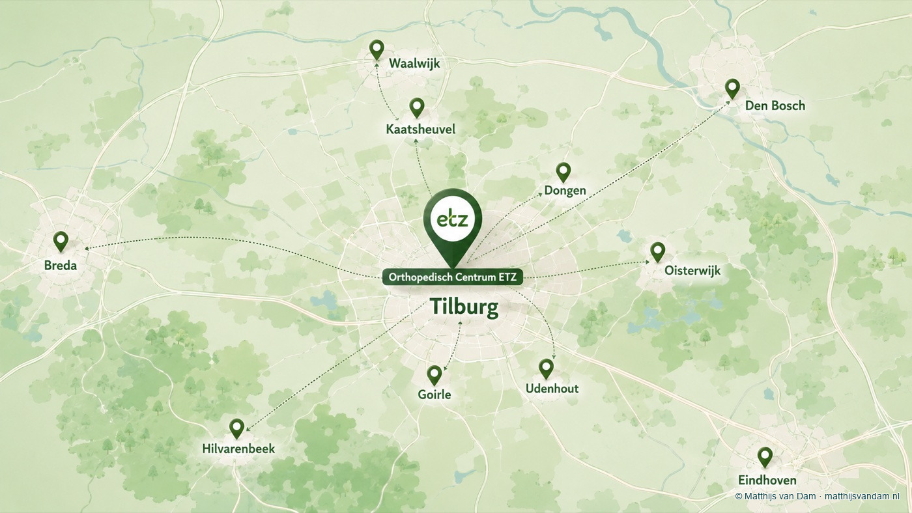

Vanuit mijn werk binnen de vakgroep Orthopedie van het ETZ zoek ik graag de samenwerking
met andere medisch specialisten, huisartsen, fysiotherapeuten, podotherapeuten, orthopedisch
schoenmakers, sportmedische centra en andere (para)medici in de regio Tilburg.

Praktisch samenwerken
Beweegzorg vraagt om samenwerking
Goede beweegzorg vraagt niet alleen om de juiste behandeling, maar ook om een helder zorgpad
en begrijpelijke informatie voor patiënten. In de dagelijkse praktijk zit de meerwaarde vaak in korte,
duidelijke afstemming: met welke vraag komt een patiënt bij mij op consult, wat is er al gedaan
en wat hebben patiënt en betrokken zorgverleners nodig om verder te kunnen?
Beweegzorg is netwerkzorg
Zeker bij artrose, sportletsel en leefstijlgerelateerde gewrichtsklachten is goede zorg vaak
gedeelde zorg. De waarde zit in heldere rollen, realistische verwachtingen en goede timing
tussen eerste lijn en ziekenhuiszorg. Ook in de artrosezorg verschuift de aandacht steeds
meer naar educatie, oefentherapie, leefstijl en regionale afspraken. Vanuit onze regio
schreven we daarover mee in het NTvG. Ik licht dat toe in
dit artikel over artrosezorg in transitie.
Duidelijk verwijzen en terugverwijzen
Bij verwijzing en terugverwijzing hoort dezelfde zorgvuldigheid: een duidelijke brief voor
huisarts, betrokken paramedici en patiënt, met een begrijpelijke conclusie en een concrete
vervolgstap. Als specialistische zorg niet nodig is, probeer ik waar passend warm over te
dragen naar de juiste zorgverlener, zonder onnodig werk terug te leggen bij de huisarts.
Samen opleiden en leren
Samenwerking groeit door elkaar te blijven ontmoeten: in scholingen met bijvoorbeeld
PrimaCura, in overleg met
fysiotherapeuten en in casuïstiek waarin eerste lijn, paramedische zorg en ziekenhuis van
elkaar leren. Zulke momenten helpen om elkaars mogelijkheden en
grenzen beter te begrijpen, dezelfde taal richting patiënten te gebruiken en verwijzing of
terugverwijzing soepeler te laten verlopen.
Korte lijn bij twijfel
Bij voet-, enkel- of knieklachten kan korte afstemming helpen: is eerstelijnsbehandeling
passend, is beeldvorming zinvol, of is een beoordeling door de orthopedie de logische
volgende stap? Voor huisartsen kan een digitaal adviesconsult via ZorgDomein daarbij een
praktische route zijn om laagdrempelig advies te vragen aan de orthopedie.
Korte lijn
Voor verwijzers en regionale (para)medici
Voor korte professionele vragen kunnen huisartsen, fysiotherapeuten, podotherapeuten en
andere (para)medici mij via Doctolib Connect toevoegen. Ik gebruik dit kanaal voor
laagdrempelig overleg over voet-, enkel-, sport- en knievragen en, waar passend, voor
niet-spoedeisende collegiale afstemming over patiënten binnen de geldende beroeps- en
privacyregels. Verwijzing, planning, besluitvorming en patiëntgebonden dossiervoering lopen
via ZorgDomein, het ETZ of andere officiële zorgkanalen.
Deel via deze website geen volledige patiëntgegevens, beelden, verwijsbrieven of vragen
over lopende patiëntenzorg.
Met artikelen over artrose, knieklachten, voet- en enkelzorg, onderwijs en samenwerking
probeer ik beweegzorg herkenbaar te maken en de regionale samenwerking concreet te houden.
Er staan nog geen artikelen bij dit onderwerp.
Updates
Volg projecten en onderwijs
Ook buiten deze site deel ik af en toe korte professionele updates.